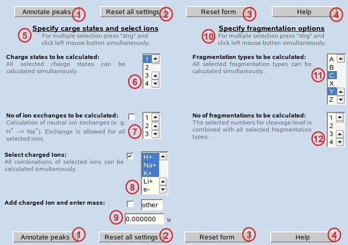

Annotate Peaks:
Calculation for all mass values from the peak list below is started using all parameters already set on the pages "mass", "residue", "ion/charge" and "modifications".
Reset all settings:
All settings manually performed on the pages "mass", "residue", "ion/charge" and "modifications" are cleared and default settings are set.
Reset form:
All settings manually performed on this form are cleared and default settings are set.
Help:
Starts Glyco-Peakfinder help files.
Specify charge-states and select ions:
In different categories settings can be made to specify charge-state and the ions responsible for the charge. All sections allow multiple selection by pressing 'strg' and clicking mouse button simultaneously.
Charge states to be calculated:
The possible charge-states for the calculation can be specified. Multiple selection is allowed (press 'strg' and mouse button simultaneously).
No of ion exchanges to be calculated:
The number of allowed neutral ion exchanges (e. g. H+ / Na+ etc.) can be selected. Exchanges will be calculated for each of the selected ions (see 8).
Select charged ions:
All ions that can occur, can be selected. In case of allowing multiple charges, all combinations of the selected ions will be calculated (e.g. H+ , H+ / H+ , Na+ / H+ , K+ / Na+ , Na+ / Na+ , K+ / K+ , K+ )
Add charged ions and enter mass:
Any other singly charged ion can be specified. For calculation the mass of the ion (monoisotopic / average, see page mass) has to be entered.
Specify fragmentation options:
For calculation of fragments more parameters have to be specified. The fragment type(s) and the number of fragmentations can be selected.
Fragmentation types to be calculated:
All series of ions can be selected to be calculated in parallel.
No of fragmentations to be calculated:
To find internal fragments or multiply-cleaved structures more than one cleavages can be allowed. Multiple selections are possible.